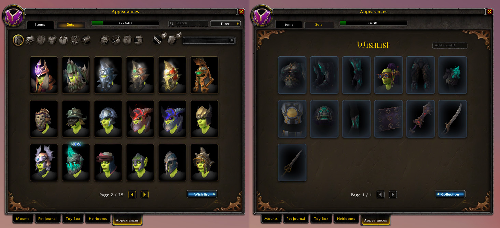

Transmog Wish List
A World of Warcraft add-on allowing players to create a wish list for transmogrification appearances.
Media
Looks neat... but what is it?
Transmog Wish List is an addon that helps players keep track of item appearances they wish to obtain. Players can add appearances which are collected in a separate list. There they can more easily see which ones they are still looking for and where to obtain them. They are also informed if an item on the list can be obtained on their currect character or not, such as a plate chestpiece of a priest. In addition to the list, players are informed in their chat window if a appearance they just unlocked was on their wish list.
The itch that needed stratching
The need for this addon doesn't actually come from myself. A friend brought it to my attention that one of his guild members was looking for 'a wish list for transmogs'. I suggested some addons that had such a feature, but they were too bloated for their liking. Having never worked with transmog API before, I saw it as an interesting challenge to make a lightweight transmog wish list.
The thought process
The creation of the addon was rather straight forward. The collection tab already contained some solid features for a wish list. The entries show a 3D preview of the items, making it easy to see what it looks like, and hovering over them shows where to find them. As the collection journal already had a section for appearances, it made sense to add the wish list to it. The easiest way was to add a separate page for the list, and a button to switch between it and the official collection. All that was needed was some trickery to hide the search and filter features at the top, and to make sure the enitre thing was on a higher frame level. Having a location for the wish list, it was time to dig into the official API to get things working.

A simple button to swap between collection and wish list.
A simple button to swap between collection and wish list.
The first challenge was getting the appearanceID from an itemID. This in itself could be done with an API function, but it wasn't until I tested with a newer itemID that it realised wouldn't be that simple. In newer expansions, Blizzard changed items to where a single itemID could contain data for multiple versions of that item. This way one item could be the same for different difficulties, but also have different variations of the model. So when letting the player add an itemID to the list, I also had to make sure to give the player the option to specify which model they were interested in. The other challenge came from updating the list when a player unlocks an appearance. When you unlock a new appearance, a message shows up in chat. So a quick solution would be to use this event, and update the list. Sadly there is a limit to how fast this event can be triggered. If the player unlocks multiple items in quick succession, only the last one gets through. The only way around this was to go over the list with every appearance unlock and check if it was now collected.
Development Gallery
This gallery contains images made during the development of the add-on.